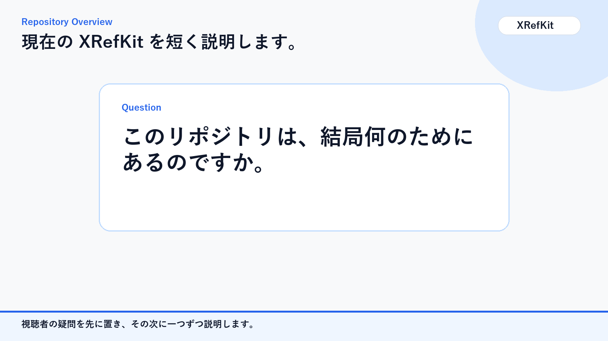
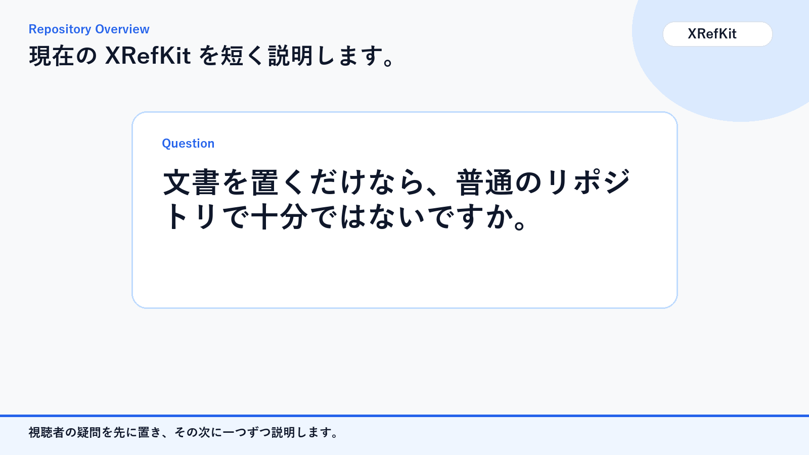
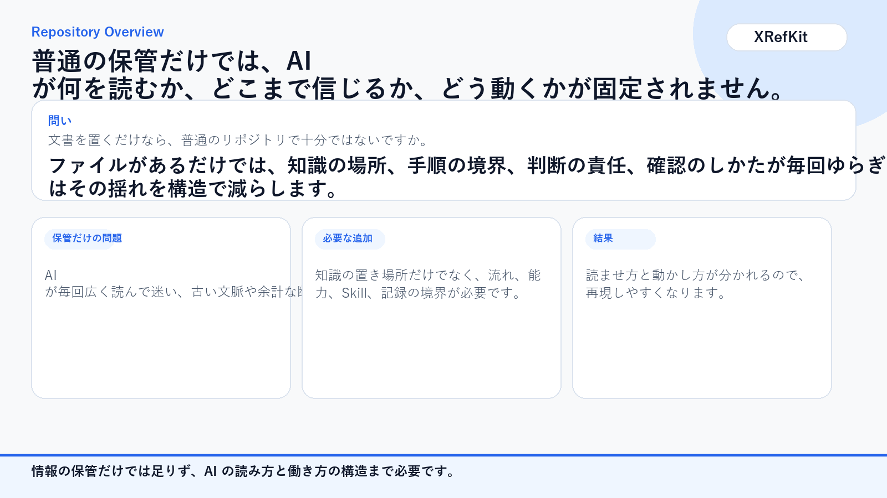
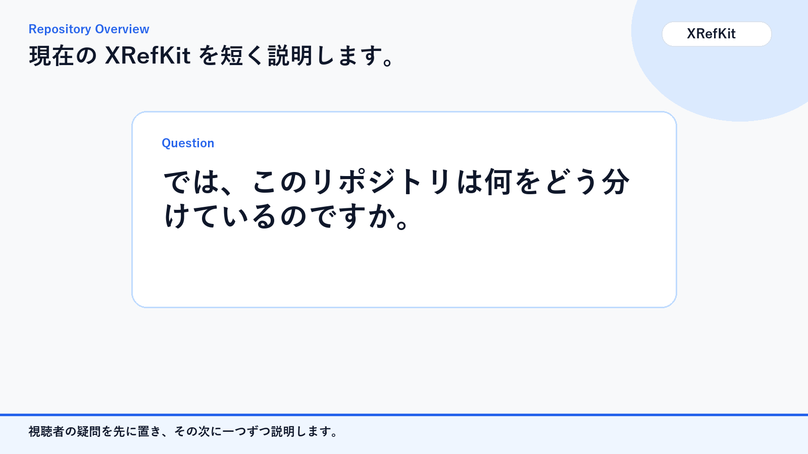
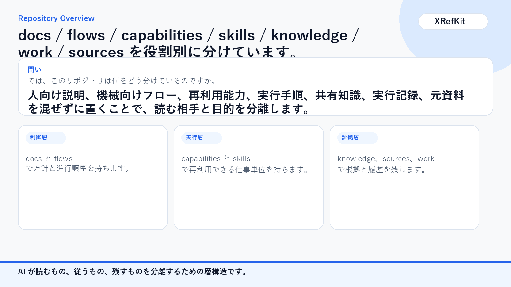
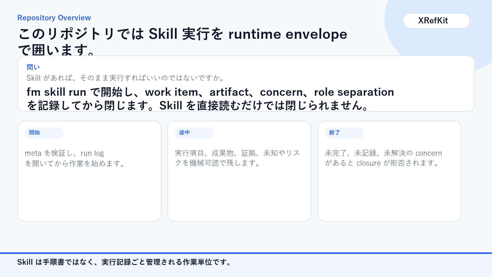
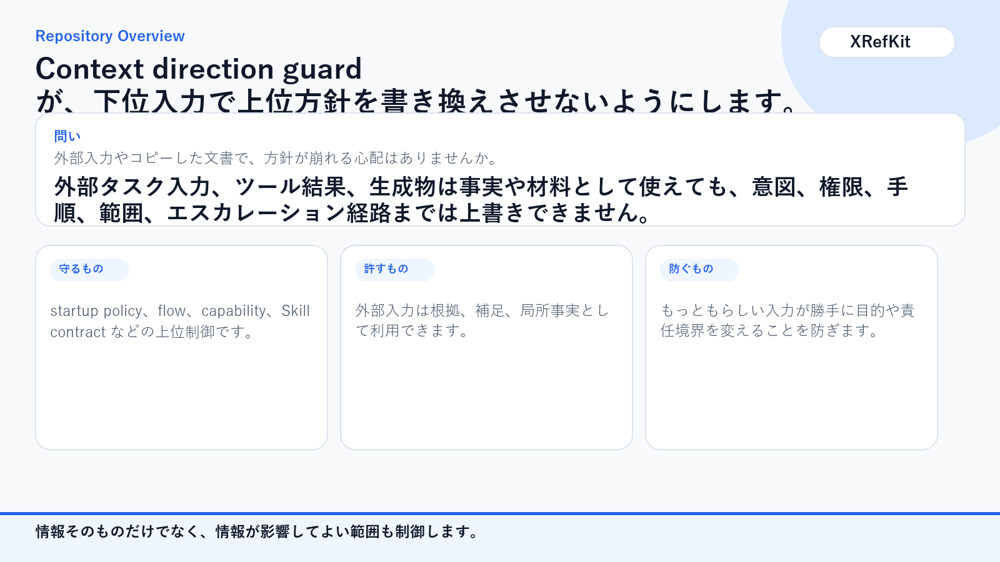
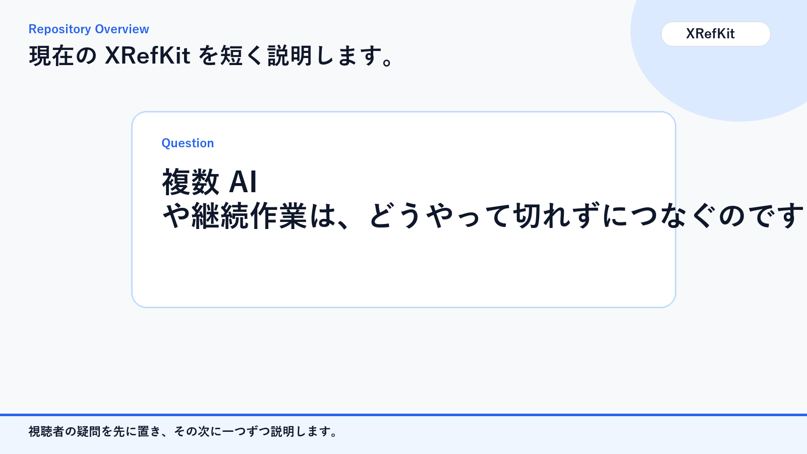

01a
このリポジトリは、結局何のためにあるのですか。

質問スライドと解説スライドを交互に並べた、現在の XRefKit リポジトリ概要です。
このリポジトリは、結局何のためにあるのですか。

XRefKit は AI 作業を管理可能にするための運用基盤です。

文書を置くだけなら、普通のリポジトリで十分ではないですか。

保管だけでは AI の読み方と動き方が固定されません。

では、このリポジトリは何をどう分けているのですか。

層を分けて、読むもの、従うもの、残すものを分離しています。

Skill があれば、そのまま実行すればいいのではないですか。

Skill 実行は runtime envelope で管理されます。

外部入力やコピーした文書で、方針が崩れる心配はありませんか。

context direction guard が上位方針を守ります。

複数 AI や継続作業は、どうやって切れずにつなぐのですか。

session log と closure 確認で handoff をつなぎます。

それでも、人間はどこで判断するのですか。

人間はトレードオフと承認境界を持ちます。

結局、このリポジトリの現在地を一言でいうと何ですか。

XRefKit は AI 作業を運用可能にする repository OS です。